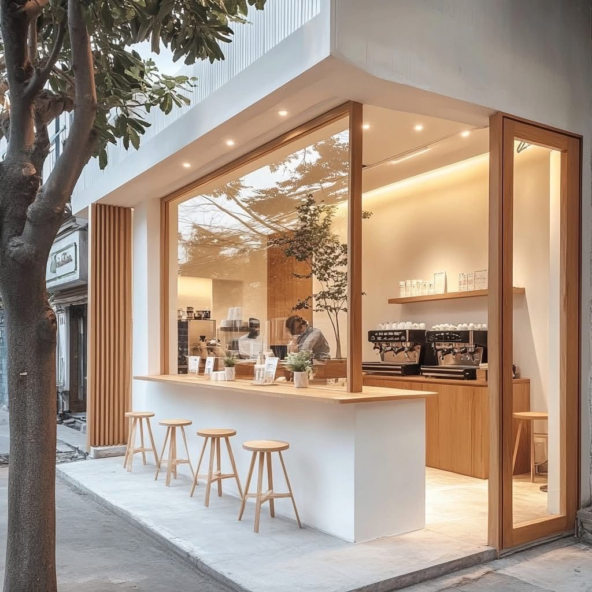

Freshness matters
We focus on the flavour, texture and care that make bakery classics special.
We make familiar favourites with a little patience, a lot of care and ingredients chosen for flavour.

✦ Freshly baked every dayBakerz Bite is built around a simple idea: a thoughtful bake can make an ordinary day feel special. We bring together classic bakery favourites, carefully prepared in small batches, with friendly service and a warm welcome.
Whether you're choosing a birthday cake, grabbing a morning pastry, or taking home cookies to share, we want every visit to feel easy and memorable.
Meet the menuWe believe the best bakery moments are the ones shared. From the first golden layer of a croissant to the last crumb of a celebration cake, our goal is to make every bite feel considered and every visit feel personal.
We focus on the flavour, texture and care that make bakery classics special.
From everyday tea-time treats to party centrepieces, there is something for every table.
Friendly service and clear product information are part of a good bakery experience.
From the first tray to the last box, here is how a day in our bakery rolls along.
 6:00 AM
6:00 AMDough is shaped and the first trays slide in.
 9:00 AM
9:00 AMWarm croissants and morning pastries meet the counter.
 12:30 PM
12:30 PMCelebration cakes are layered, frosted and finished by hand.
 4:00 PM
4:00 PMFresh cookies and pies for the golden-hour rush.
 10:00 PM
10:00 PMThe final order is packed and the ovens finally rest.